Code
siteinfo <- read_csv("C:/Users/jbaldock/OneDrive - DOI/Documents/USGS/EcoDrought/EcoDrought Working/Data/EcoDrought_SiteInformation.csv")
siteinfo_sp <- st_as_sf(siteinfo, coords = c("long", "lat"), crs = 4326)Site information
siteinfo <- read_csv("C:/Users/jbaldock/OneDrive - DOI/Documents/USGS/EcoDrought/EcoDrought Working/Data/EcoDrought_SiteInformation.csv")
siteinfo_sp <- st_as_sf(siteinfo, coords = c("long", "lat"), crs = 4326)Little g’s
dat_clean <- read_csv("C:/Users/jbaldock/OneDrive - DOI/Documents/USGS/EcoDrought/EcoDrought Working/EcoDrought-Analysis/Qualitative/LittleG_data_clean.csv")Big G’s
dat_clean_big <- read_csv("C:/Users/jbaldock/OneDrive - DOI/Documents/USGS/EcoDrought/EcoDrought Working/EcoDrought-Analysis/Qualitative/BigG_data_clean.csv")Watersheds (filter to Snake River only)
sheds_list <- list()
myfiles <- list.files(path = "C:/Users/jbaldock/OneDrive - DOI/Documents/USGS/EcoDrought/EcoDrought Working/EcoDrought-Analysis/Watershed Delineation/Watersheds/", pattern = ".shp")
for (i in 1:length(myfiles)) {
sheds_list[[i]] <- st_read(paste("C:/Users/jbaldock/OneDrive - DOI/Documents/USGS/EcoDrought/EcoDrought Working/EcoDrought-Analysis/Watershed Delineation/Watersheds/", myfiles[i], sep = ""))
}
sheds <- do.call(rbind, sheds_list) %>%
mutate(site_id = ifelse(site_id == "SP01", "SP07", ifelse(site_id == "SP07", "SP01", site_id))) %>%
left_join(siteinfo) %>%
filter(basin == "Snake River")
sheds <- vect(st_transform(sheds, crs = crs(siteinfo_sp)))
#mapview(sheds %>% arrange(desc(area_sqmi)), alpha.regions = 0.2)Spring prevalence (Snake only)
springprev <- rast("C:/Users/jbaldock/OneDrive - DOI/Documents/USGS/EcoDrought/EcoDrought Working/Data/Snake Groundwater/SpringPrev_UpperSnake_BedSurf_nolakes_flowbuff100.tif")
#plot(springprev)Diel PASTA derived parameters (for EcoDrought sites) - summarize as July-September site-specific means:
pasta <- read_csv("C:/Users/jbaldock/OneDrive - DOI/Documents/USGS/EcoDrought/EcoDrought Working/EcoDrought-Analysis/Covariates/pasta_derived_parameters_daily.csv") %>%
mutate(Month = month(date)) %>%
rename(CalendarYear = year) %>%
filter(Month %in% c(7:9)) %>%
group_by(site_name, CalendarYear) %>%
summarize(meanRatio = mean(meanRatio, na.rm = TRUE),
phaseLag = mean(phaseLag, na.rm = TRUE),
amplitudeRatio = mean(amplitudeRatio, na.rm = TRUE)) %>%
ungroup()
pasta# A tibble: 432 × 5
site_name CalendarYear meanRatio phaseLag amplitudeRatio
<chr> <dbl> <dbl> <dbl> <dbl>
1 Avery Brook 2020 0.886 1.48 0.230
2 Avery Brook 2021 0.904 2.89 0.290
3 Avery Brook 2022 0.876 1.68 0.208
4 Avery Brook 2023 0.903 3.21 0.332
5 Avery Brook 2024 0.855 2.26 0.243
6 BigCreekLower 2017 1.29 1.81 0.396
7 BigCreekLower 2018 0.826 2.43 0.313
8 BigCreekLower 2019 1.06 2.45 0.383
9 BigCreekLower 2020 0.868 1.85 0.428
10 BigCreekMiddle 2018 0.933 1.20 0.338
# ℹ 422 more rowsCreate plotting function
mdaystib <- tibble(Month = c(1:12), mdays = c(31,28,31,30,31,30,31,31,30,31,30,31))
gwflowfun <- function (subbas, years, dropsites, months = c(7:9)) {
dat_clean %>%
filter(subbasin == subbas, CalendarYear %in% years, Month %in% months) %>%
group_by(site_name, subbasin, designation, CalendarYear) %>% #, Month, MonthName) %>%
summarise(ss = n(),
logYield = mean(logYield, na.rm = TRUE)) %>%
ungroup() %>%
#left_join(mdaystib) %>%
mutate(pdays = ss/92#,
#YearMonth = paste(CalendarYear, "_", Month, sep = "")
) %>%
filter(pdays > 0.9,
!site_name %in% dropsites) %>%
group_by(CalendarYear) %>%
#mutate(z_logYield = scale(logYield, center = TRUE, scale = TRUE)[,1]) %>%
ungroup() %>%
left_join(pasta) %>%
ggplot(aes(x = amplitudeRatio, y = logYield)) +
geom_abline(intercept = 0, slope = 0, linetype = 2) +
geom_smooth(method = "lm", color = "black") +
geom_point(aes(color = site_name)) +
facet_wrap(~CalendarYear, nrow = 1) +
#facet_wrap2(~CalendarYear, nrow = 1, ncol = 5, trim_blank = FALSE) +
#facet_grid(cols = vars(Month), rows = vars(CalendarYear)) +
theme_bw() + theme(panel.grid.major = element_blank(), panel.grid.minor = element_blank())
}Get unique basins
unique(dat_clean$basin)[1] "West Brook" "Paine Run" "Staunton River" "Flathead"
[5] "Snake River" "Shields River" "Donner Blitzen"Plot the relationship between annual summer mean discharge and amplitude ratio from PASTA, where lower amplitude ratio values are indicative of greater groundwater availability. Mean flow for each site is standardized by year to remove interannual variation in climate/regional water availability
gwflowfun(subbas = "West Brook", dropsites = c("Mitchell Brook"), years = c(2020:2024))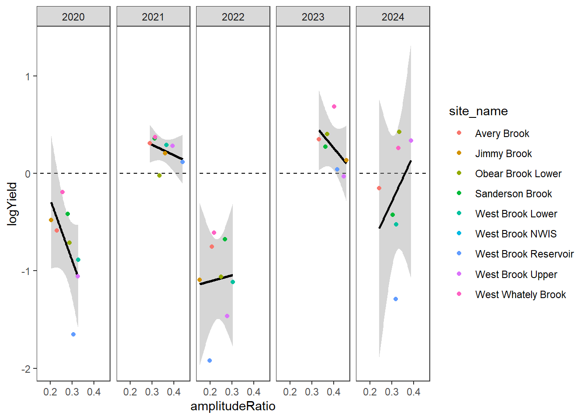
gwflowfun(subbas = "Staunton River", dropsites = NA, years = c(2019:2021))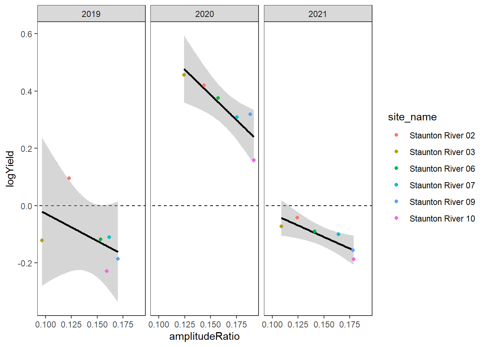
gwflowfun(subbas = "Snake River", dropsites = NA, years = c(2018, 2020:2022), months = c(7:9))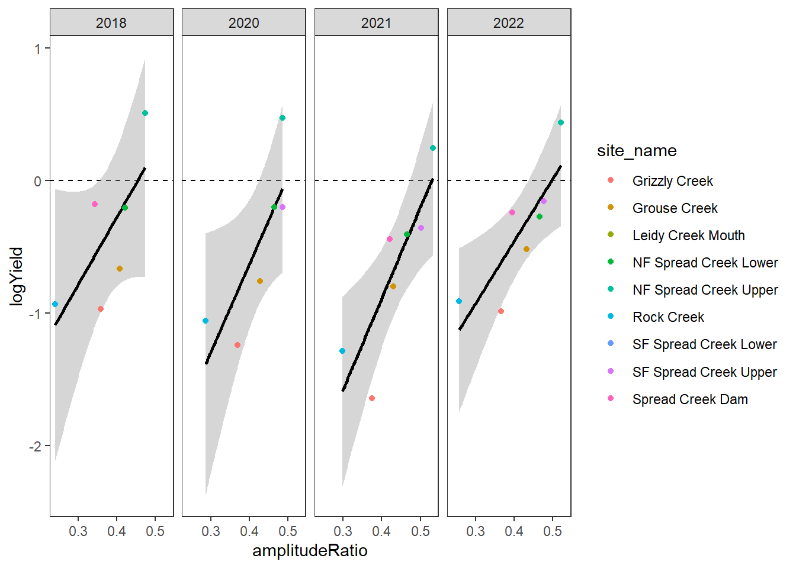
gwflowfun(subbas = "Shields River", dropsites = NA, years = c(2017,2019,2020,2022,2023), months = c(7:9))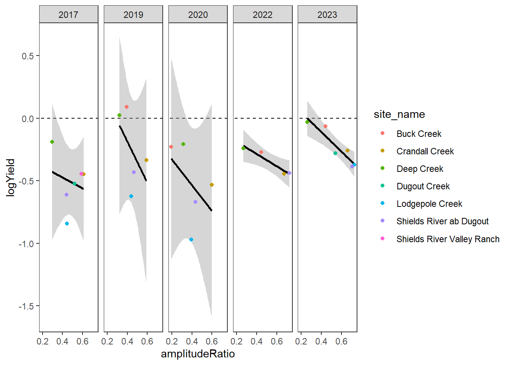
Load spatially explicity groundwater indices for the entire Snake River basin
springprev_cont <- vect("C:/Users/jbaldock/OneDrive - DOI/Documents/USGS/EcoDrought/EcoDrought Working/Data/Snake Groundwater/GroundwaterMetrics_Normalized_PredPoints.shp")Plot groundwater spring prevalence across upper Snake River basin, springprev_point: spring prevalence value (10mx10m cell) every 300 m along the entire spring network (too large to plot interactive maps in Quarto)
mapview(st_as_sf(springprev_cont), zcol = "springpre0", col.regions = colorRampPalette(rev(magma(12))), alpha.regions = 1)Plot inverse distance weighted (5 km decay) groundwater index across upper Snake River basin, springprev_iew05km: mean spring prevalence within contributing catchment, inverse distance weighted with 5 km decay, every 300 m along the entire spring network (too large to plot interactive maps in Quarto)
mapview(st_as_sf(springprev_cont), zcol = "springpre3", col.regions = colorRampPalette(rev(viridis(12))), alpha.regions = 1)Plot groundwater metrics across the Spread Creek sub-basin
sheds <- terra::project(sheds, crs(springprev_cont))
springprev_cont_snake <- mask(crop(springprev_cont, sheds[sheds$site_name == "Spread Creek Dam",]), sheds[sheds$site_name == "Spread Creek Dam",])
mynet <- vect("C:/Users/jbaldock/OneDrive - DOI/Documents/USGS/EcoDrought/EcoDrought Working/EcoDrought-Analysis/Watershed Delineation/Streams/Snake_Streams.shp")
crs(mynet) <- crs(siteinfo_sp)
mynet <- terra::project(mynet, crs(sheds))
mynet <- crop(mynet, sheds[sheds$site_name == "Spread Creek Dam",])
# convert to SpatVectors
sites_flow <- vect(siteinfo_sp %>% filter(basin == "Snake River"))
# sheds <- vect(sheds)
# transform
sites_flow <- terra::project(sites_flow, crs(springprev))
sheds <- terra::project(sheds, crs(springprev))Point-wise spring prevalence
ggplot() +
geom_sf(data = st_as_sf(sheds[sheds$site_name == "Spread Creek Dam",]), color = "black", fill = "white", linewidth = 0.4) +
geom_sf(data = st_as_sf(mynet), color = "white", linewidth = 1, lineend = "round") +
geom_sf(data = st_as_sf(mynet), color = "royalblue4", linewidth = 0.6, lineend = "round") +
geom_sf(data = st_as_sf(springprev_cont_snake), aes(colour = springpre0), size = 2) +
scale_colour_viridis(option = "A", direction = -1, limits = range(springprev_cont_snake$springpre0), na.value = "grey") +
geom_sf(data = st_as_sf(sites_flow) %>% filter(designation != "big"), shape = 21, fill = "white", size = 2) +
labs(colour = "Spring\nprevalence\n(point)") + #annotation_scale() +
theme_bw() + theme(axis.title.x = element_blank(), axis.title.y = element_blank(), axis.text = element_blank()) 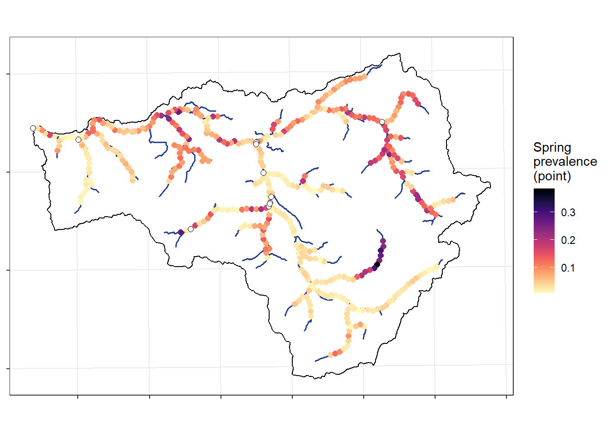
Groundwater index (IEW-5km)
ggplot() +
geom_sf(data = st_as_sf(sheds[sheds$site_name == "Spread Creek Dam",]), color = "black", fill = "white", linewidth = 0.4) +
geom_sf(data = st_as_sf(mynet), color = "white", linewidth = 1, lineend = "round") +
geom_sf(data = st_as_sf(mynet), color = "royalblue4", linewidth = 0.6, lineend = "round") +
geom_sf(data = st_as_sf(springprev_cont_snake), aes(colour = springpre3), size = 2) +
scale_colour_viridis(option = "D", direction = -1, limits = range(springprev_cont_snake$springpre3), na.value = "grey") +
geom_sf(data = st_as_sf(sites_flow) %>% filter(designation != "big"), shape = 21, fill = "white", size = 2) +
labs(colour = "GW index\n(IEW-5km)") + #annotation_scale() +
theme_bw() + theme(axis.title.x = element_blank(), axis.title.y = element_blank(), axis.text = element_blank()) 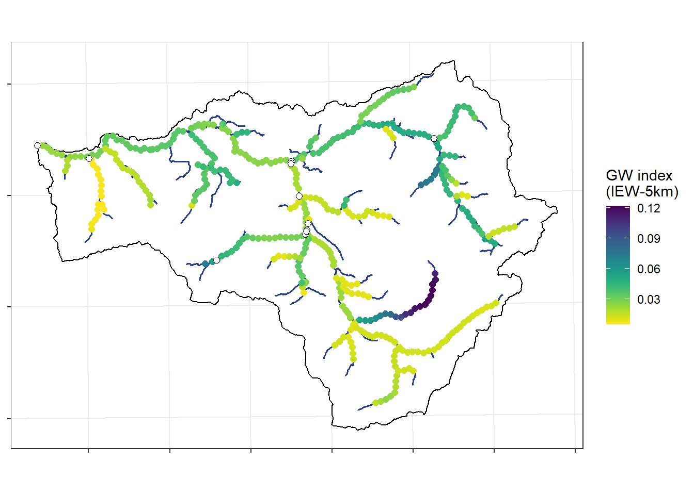
Extract groundwater metrics from MaxEnt spring prevalence model, for the EcoDrought sites
# extract average and weighted spring prevalence for each basin
sites <- sheds$site_name
gwlist <- list()
st <- Sys.time()
for (i in 1:length(sites)) {
spring_mask <- mask(crop(springprev, sheds[sheds$site_name == sites[i],]), sheds[sheds$site_name == sites[i],]) # crop and mask by basin
dist_rast <- distance(spring_mask, sites_flow[sites_flow$site_name == sites[i],]) %>% mask(spring_mask) # calculate distance between each raster cell and site location
gwlist[[i]] <- tibble(site_name = sites[i],
area_sqmi = sites_flow$area_sqmi[i],
springprev_point = terra::extract(springprev, sites_flow[sites_flow$site_name == sites[i],], na.rm = TRUE)[,2],
springprev_basinmean = as.numeric(global(spring_mask, "mean", na.rm = T)), # extract(spring_buff, sheds_yoy[sheds_yoy$site == sites[i],], fun = mean, na.rm = TRUE)[,2],
springprev_iew01km = as.numeric(global(spring_mask * (1 / exp(dist_rast/1000)), "sum", na.rm = T) / global(1 / exp(dist_rast/1000), "sum", na.rm = T)),
springprev_iew05km = as.numeric(global(spring_mask * (1 / exp(dist_rast/5000)), "sum", na.rm = T) / global(1 / exp(dist_rast/5000), "sum", na.rm = T))
)
print(i)
}
Sys.time() - st
gwmetrics_snake <- do.call(rbind, gwlist) # bind as tibbleView groundwater metrics for the EcoDrought sites:
datatable(gwmetrics_snake %>% mutate(across(where(is.numeric), ~ round(., 3))))Plot relationship between groundwater availability and mean summer log(specific discharge).
dat_summer <- dat_clean %>%
filter(basin == "Snake River", Month %in% c(7:9)) %>%
group_by(site_name, basin, designation, WaterYear) %>% #, Month, MonthName) %>%
summarise(ndays = n(),
logYield_mean = mean(logYield, na.rm = TRUE),
logYield_min = min(logYield, na.rm = TRUE)) %>%
ungroup() %>%
mutate(pdays = ndays/92) %>%
filter(pdays > 0.9) %>%
left_join(gwmetrics_snake) #%>%
#left_join(wateravail %>% filter(basin == "Snake River") %>% select(WaterYear, totalyield_sum, totalyield_sum_z))
#summary(lm(logYield_mean ~ springprev_iew05km*totalyield_sum, data = dat_summer))
dat_summer %>%
#filter(site_name != "Grizzly Creek") %>%
#filter(WaterYear %in% c(2020:2023)) %>%
ggplot(aes(x = springprev_iew05km, y = logYield_mean)) +
geom_smooth(method = "lm", aes(x = springprev_iew05km, y = logYield_mean), se = FALSE, color = "grey50") +
geom_point(aes(color = site_name)) +
theme_bw() + theme(panel.grid = element_blank()) +
xlab("Groundwater index (IEW-5km)") + ylab("Mean summer log(specific discharge)") +
facet_wrap(~WaterYear)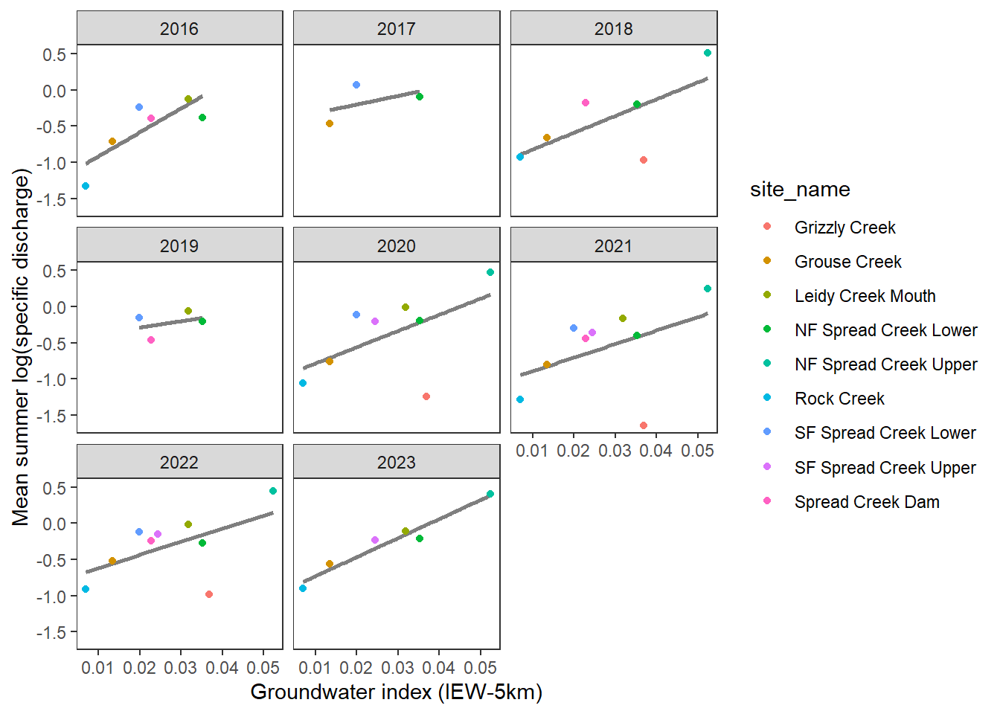
dat_summer %>%
filter(WaterYear %in% c(2020:2023)) %>%
ggplot(aes(x = springprev_iew05km, y = logYield_mean)) +
geom_smooth(method = "lm", aes(x = springprev_iew05km, y = logYield_mean), se = FALSE, color = "grey50") +
geom_point(aes(color = site_name, shape = factor(WaterYear))) +
theme_bw() + theme(panel.grid = element_blank()) +
xlab("Groundwater index (IEW-5km)") + ylab("Mean summer log(specific discharge)")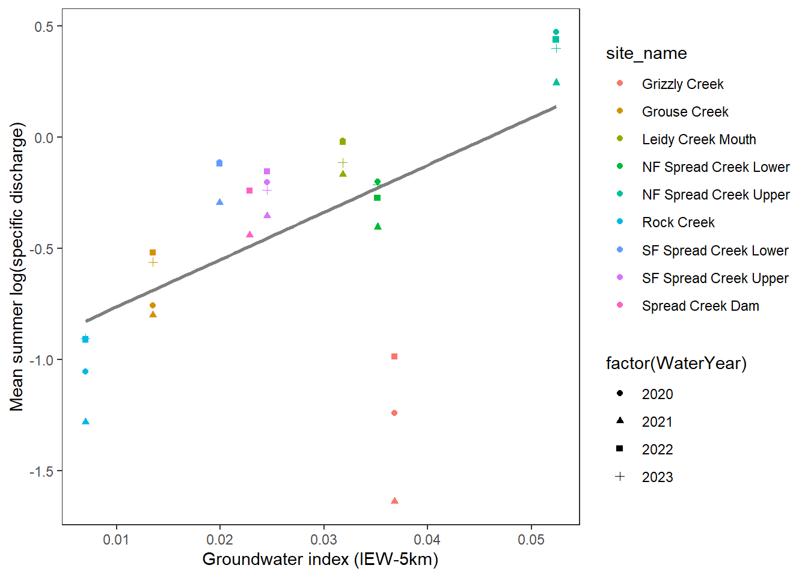
With the exception of Grizzly Creek, there is a surprisingly tight relationship between the groundwater index and summer streamflow: higher water availability (specific discharge) in reaches with high groundwater availability. Not surprising, but it’s a very nice validation of the MaxEnt approach to estimating groundwater availability and links to summer habitat conditions (e.g., drought refugia).
Grizzly is the exception: high groundwater index despite very low flows. I’ve never been there, so I’m wondering what Robert makes of this. One thought I had is that where discharge is measured may be out on an alluvial fan, which may be in a losing reach as water spread outs into more porous material. We built the groundwater model to estimate the prevalence of springs, not where water is lost to the subsurface. So the groundwater index would not reflect these more nuanced dynamics. Alternatively (or additionally), looking at satellite imagery, there is a large beaver complex just upstream of the discharge monitoring site…which may reduce surface flows immediately downstream as shallow sediments are recharged. Scanning satellite imagery, it is pretty clear where springs discharge in the headwaters of Grizzly Creek. So, the MaxEnt model may not necessarily be wrong, but it doesn’t account for other factors which have important effects on streamflow at even finer spatial scales.
pasta %>% left_join(gwmetrics_snake) %>%
filter(!is.na(springprev_point), CalendarYear %in% c(2013:2023)) %>%
ggplot(aes(x = springprev_iew05km, y = amplitudeRatio)) +
geom_point(aes(color = site_name)) +
facet_wrap(~CalendarYear) +
theme_bw() + theme(panel.grid = element_blank()) +
xlab("Groundwater index (IEW-5km)") + ylab("Amplitude ratio")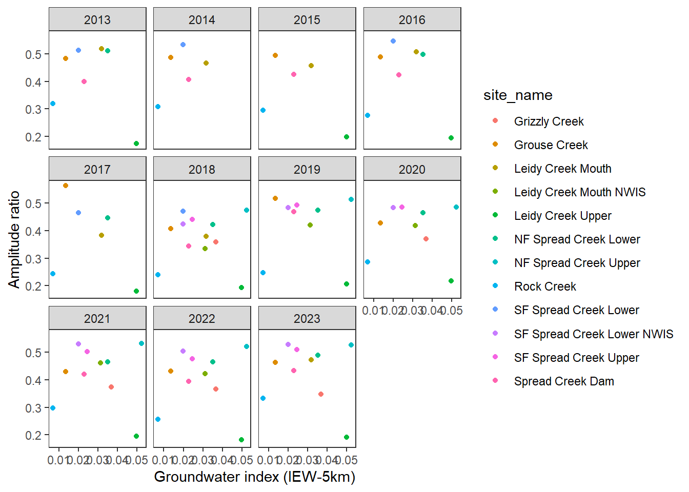
pasta %>% left_join(gwmetrics_snake) %>%
filter(!is.na(springprev_point), CalendarYear %in% c(2013:2023)) %>%
ggplot(aes(x = springprev_iew05km, y = phaseLag)) +
geom_point(aes(color = site_name)) +
facet_wrap(~CalendarYear) +
theme_bw() + theme(panel.grid = element_blank()) +
xlab("Groundwater index (IEW-5km)") + ylab("Phase lag")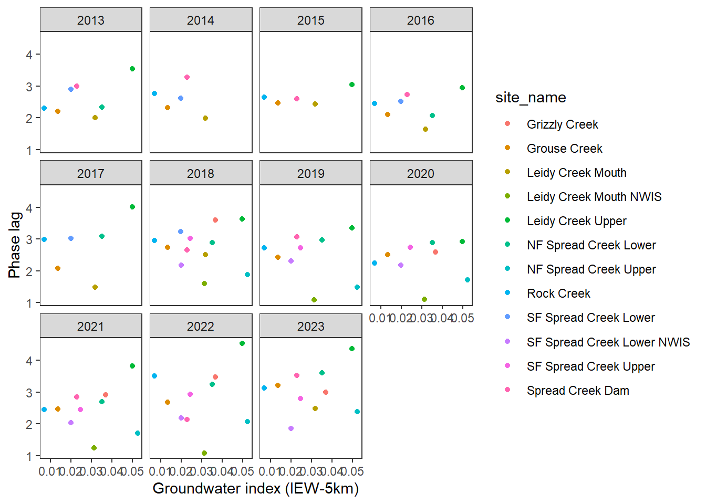
pasta %>% left_join(gwmetrics_snake) %>%
filter(!is.na(springprev_point), CalendarYear %in% c(2013:2023)) %>%
ggplot(aes(x = springprev_iew05km, y = meanRatio)) +
geom_point(aes(color = site_name)) +
facet_wrap(~CalendarYear) +
theme_bw() + theme(panel.grid = element_blank()) +
xlab("Groundwater index (IEW-5km)") + ylab("Mean ratio")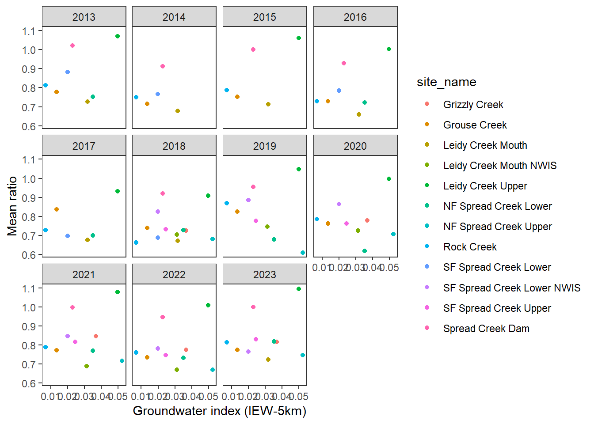
pasta %>% left_join(gwmetrics_snake) %>%
filter(!is.na(springprev_point), CalendarYear %in% c(2013:2023)) %>%
ggplot(aes(x = springprev_point, y = amplitudeRatio)) +
geom_point(aes(color = site_name)) +
facet_wrap(~CalendarYear) +
theme_bw() + theme(panel.grid = element_blank()) +
xlab("Spring prevalence") + ylab("Amplitude ratio")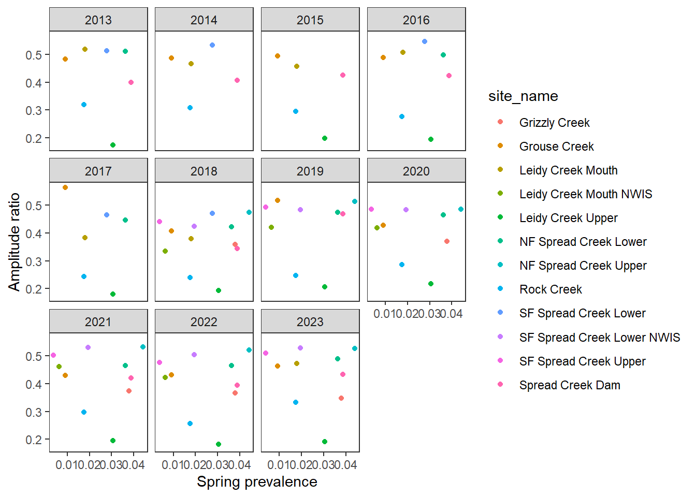
pasta %>% left_join(gwmetrics_snake) %>%
filter(!is.na(springprev_point), CalendarYear %in% c(2013:2023)) %>%
ggplot(aes(x = springprev_point, y = phaseLag)) +
geom_point(aes(color = site_name)) +
facet_wrap(~CalendarYear) +
theme_bw() + theme(panel.grid = element_blank()) +
xlab("Spring prevalence") + ylab("Phase lag")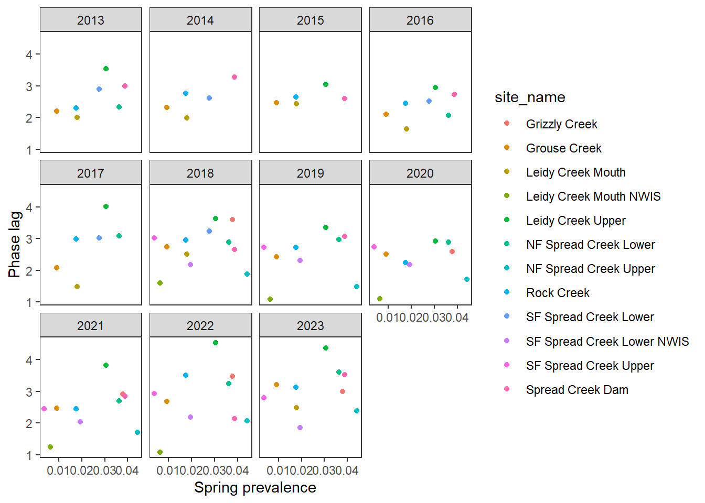
pasta %>% left_join(gwmetrics_snake) %>%
filter(!is.na(springprev_point), CalendarYear %in% c(2013:2023)) %>%
ggplot(aes(x = springprev_point, y = meanRatio)) +
geom_point(aes(color = site_name)) +
facet_wrap(~CalendarYear) +
theme_bw() + theme(panel.grid = element_blank()) +
xlab("Spring prevalence") + ylab("Mean ratio")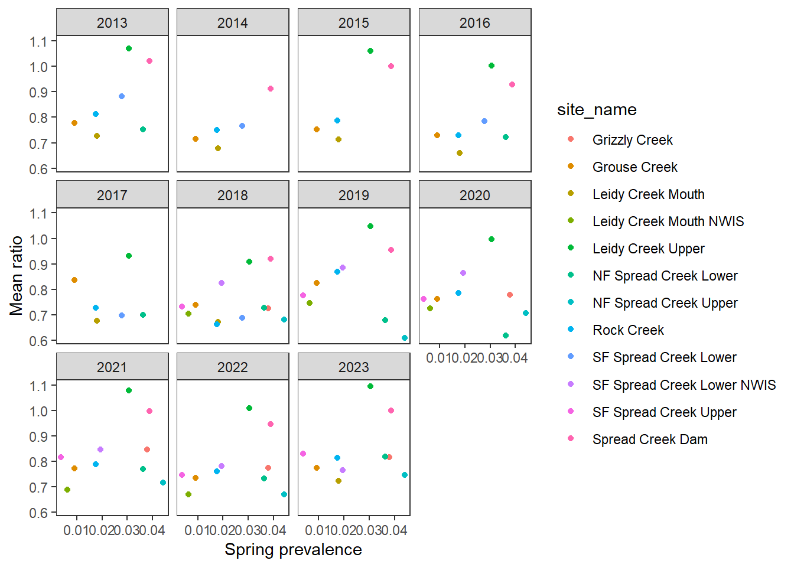